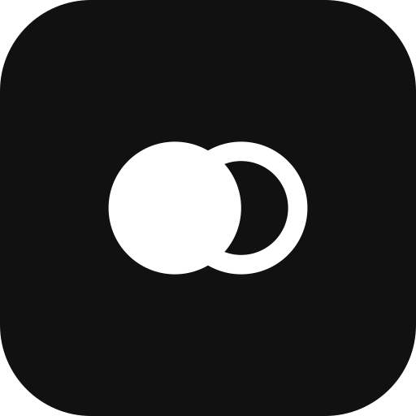

160
160Who we are
Bittokx is an AI-native operating system that connects and automates the entire e-commerce business. The mark is Eclipse: the store is solid, the AI is the ring, the overlap is the OS.
Primary lockup — positive
Primary lockup — reversed
Mark — survives small
16096
app icon